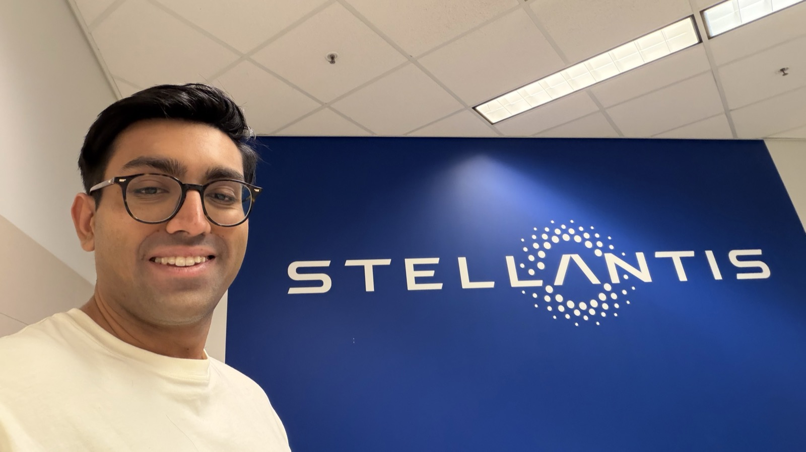
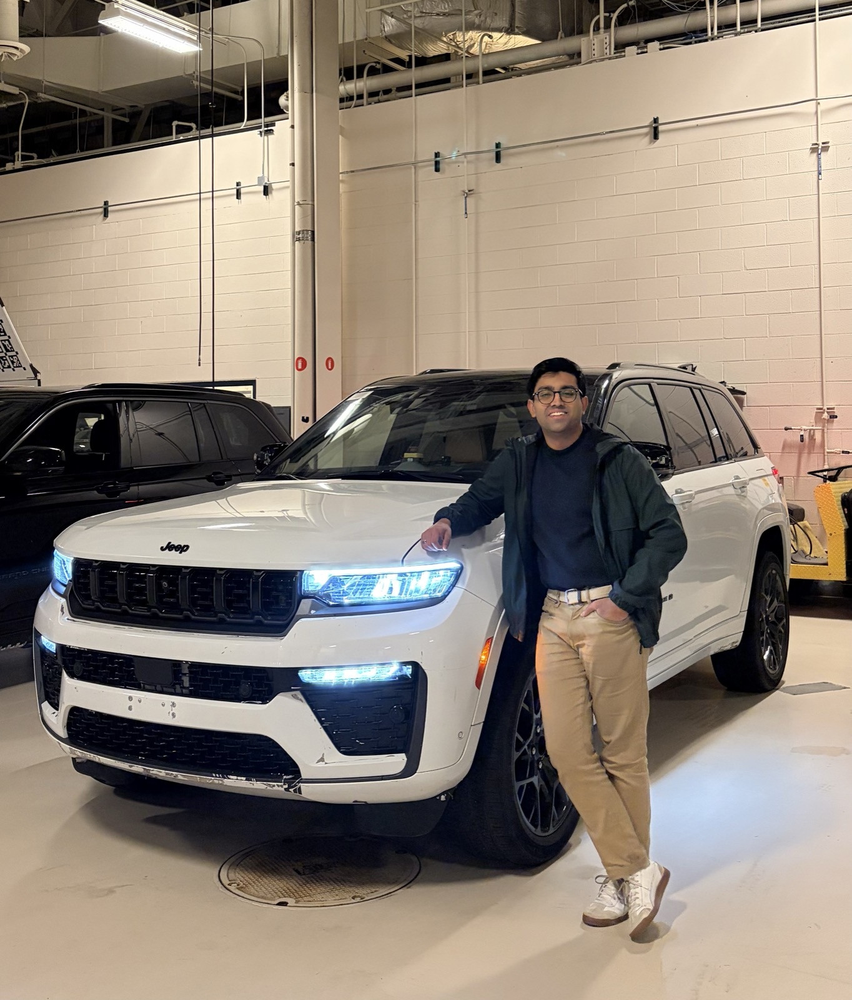
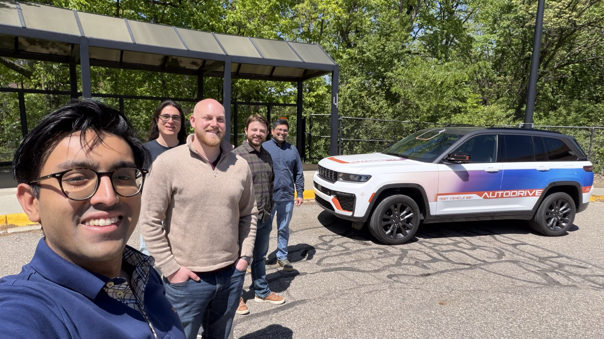
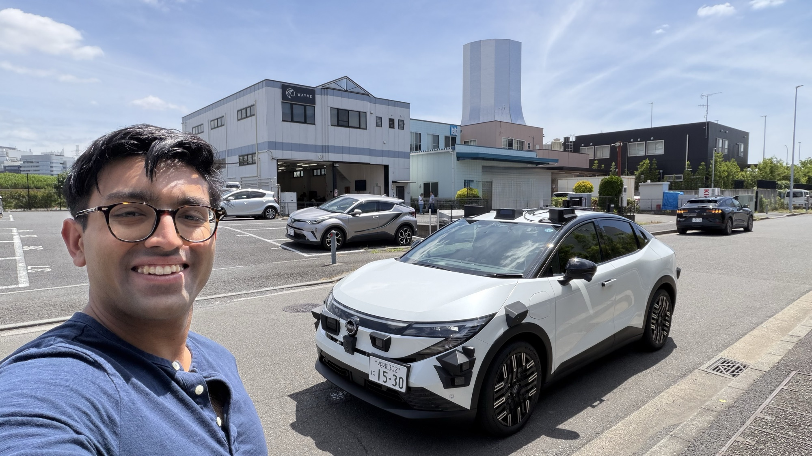
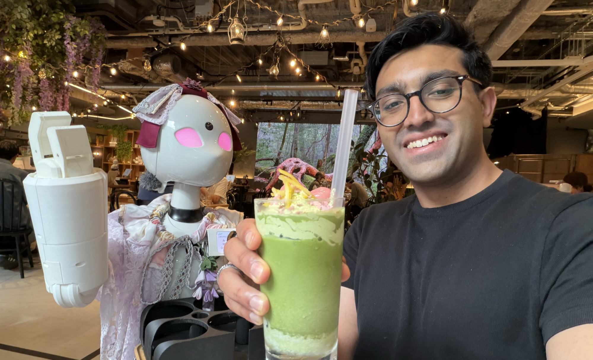
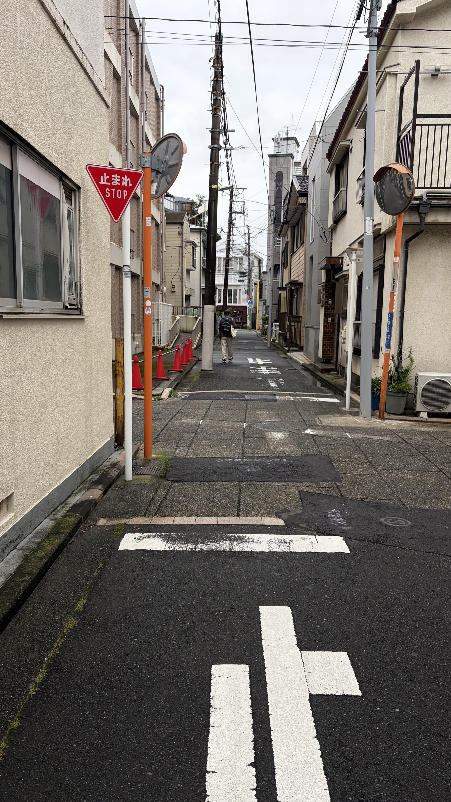
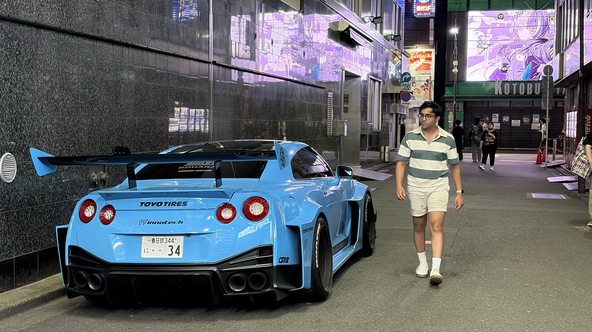
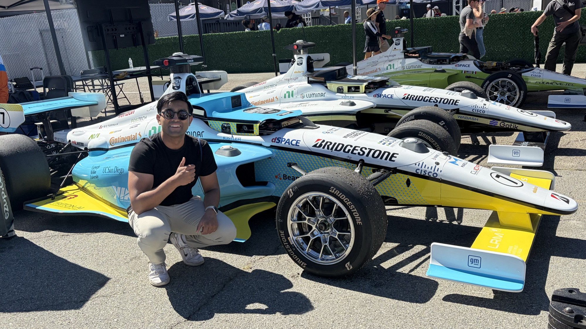

Kunal Gupta
Hey, welcome! I build robots, travel, and write.
Other times find me on a tennis court, drifting a mountain
pass, or getting humbled at poker and chess.
Production Deal
Stellantis officially nominated Wayve to deliver its autonomous driving capabilities! As WSJ article opened: “a team of engineers flew to Detroit on a secret mission to make Jeep Grand Cherokees drive themselves.” I led software integration on that lightning project; it came with plenty of late nights and interaction with industry heavyweights. The deal is signal for legacy automakers’ appetite to answer questions China and Tesla are posing, and of Wayve’s position to win the vertical.



Japan Deployment
As an Integration Lead on Wayve’s robotaxi program, I spend much time onsite in future rollout locations. Japan is uniquely complicated for AVs, with extensive signage and dense, vertical cities. As for innovation, there's a saying "Japan has been in the 2000s since 1980", but you really can't tell when a robot serves you at the corner cafe.




Indy Autonomous
Indycar at Laguna Seca is a must for every motorsport die-hard, but Indy Autonomous Challenge cars ripping Zinardi Corkscrew made my weekend. Colleges are given then same caliber compute, sensors, and vehicle interface gear as industry, and are working their way toward E2E self-driving at 200kph!


Robotics Engineer
Wayve / Mountain View Building and deploying the fastest generalizing robot autonomy stack for self-driving cars. Leading integration on Robotaxi and Advanced Development Programs
Founder in Residence
Entrepreneur First / San Francisco Iterated on robotics tooling, training, and embodiments in highly-selective incubator cohort. Backers include Demis Hassabis, Nat Friedman, and Matt Clifford.
Analyst Extern
Battery Ventures / Remote Sourced and led deal diligence for early / growth-stage tech investments.
Full-Team Lead
Cornell Electric Vehicles / Ithaca Scaled and directed 60-person student team building autonomous, hyper-efficient electric cars. Among first such teams in America.
SWE Intern
Amazon AGI / Boston Developed ML Infra module to accelerate dataset generation for Alexa Spoken Language Understanding models, under Amazon AGI.
Researcher
Collective Embodied Intelligence Lab / Ithaca Designed perception and control algorithms for bio-inspired swarm robot stigmergic coordination research.
Robotics Intern
Dynamic Locomotion / Groton Developed electrical subsystem and embedded SW for joint control of high-efficiency humanoid.
Co-Founder & CTO
Visions / The Hague and Kotor Led technology architecture of immersive reality platforms for the tourism industry. Backed and deployed in Montenegro.